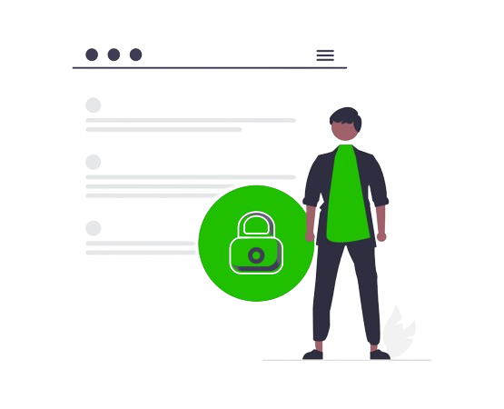

Introdução a cyber-segurança

A cibersegurança é uma área crucial na era digital, onde a interconexão global atingiu níveis sem precedentes. Com o aumento exponencial de dados armazenados e transmitidos eletronicamente, a proteção contra ameaças cibernéticas tornou-se uma prioridade incontestável. A cibersegurança abrange uma gama diversificada de práticas, desde a proteção de redes e sistemas até a conscientização do usuário.